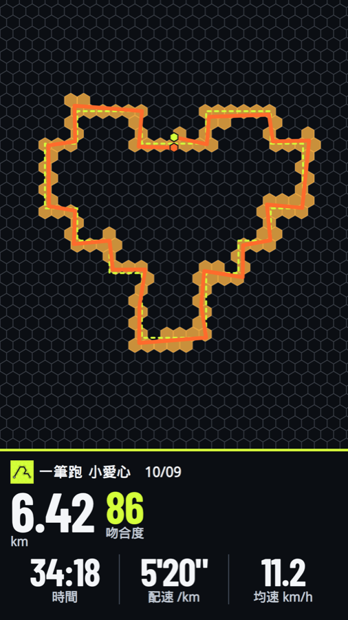
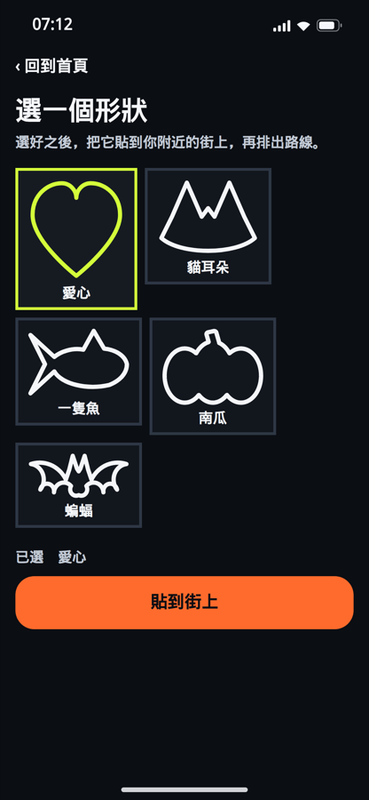
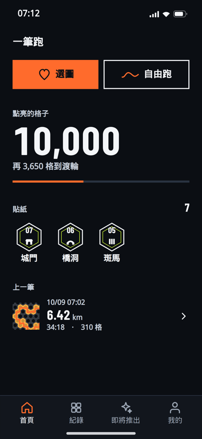
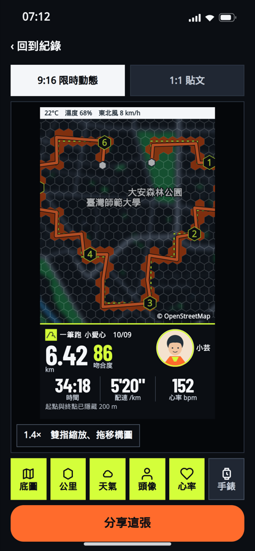

選個形狀，
用腳在城市畫出來。
不用研究路線，一筆跑幫你把愛心、貓耳朵、南瓜貼到附近的街道，
一鍵出發，邊跑邊畫，跑完就是一幅作品。
- 一鍵排路線形狀貼上街道，自動對齊
- 吻合度分數跑完看你畫得有多像
- 點亮六角格每跑一步都有進度
- 手錶震動導航轉彎不用一直看手機
封閉測試期間，功能與畫面可能持續調整。

三種玩法，都從家附近開始
想畫大圖、想隨性跑、想找朋友一起，都在同一個 App 裡完成。
選圖跑
從形狀清單挑一個，貼到你附近的街道，系統排出路線，一鍵開始導航。
手繪跑
想畫自己的圖？直接在地圖上畫一筆，放上街道後選方案，用你的圖案出發。
自由跑・組隊跑
只想跑就跑，也能照樣點亮格子；或和朋友把一幅大圖分段認領，一起拼完。
為什麼選擇一筆跑？
把「跑步很累」變成「我今天要畫什麼」。
形狀圖庫
愛心、貓耳朵、一隻魚、南瓜、蝙蝠……持續增加，還有節慶限定圖案。
貼到街上
選好形狀後，縮放、移動到你想畫的地方，自動貼合附近可跑的道路。
即時導航
前方路段最醒目，轉彎預告清楚；偏離路線會提示，並協助回到原路線。
城市點亮
跑過的地方會點亮六角格，累積格數、蒐集城門、橋洞、斑馬線等貼紙。
組隊跑
邀請朋友認領一幅大圖的不同段落，各跑一段，最後拼成完整作品。
分享路線
一個連結就能把路線送給朋友，對方不必安裝也能先預覽；可隱藏起點保護隱私。
選一個形狀，
剩下的交給一筆跑。
不必懂地圖、不必自己規劃。挑好圖案、貼到街上，路線就排好了。
- 圖庫形狀一點即選，還可以手繪自己的圖
- 自動對齊附近道路，產生可跑的候選方案
- 預覽距離與轉彎數，滿意再開跑

每一步，
都在點亮你的城市。
就算今天只是隨便跑，也有進度可看：點亮的格子、離下一個里程碑還差多少、收集到的街景貼紙。
- 首頁一眼看到累積格數與下個目標
- 城門、橋洞、斑馬線……用貼紙記下你走過的地標
- 紀錄頁保留每一筆的路線縮圖

跑完，
做成一張想分享的卡。
地圖、距離、配速、吻合度，一次排好。支援 9:16 限時動態與 1:1 貼文，也能選擇要不要顯示底圖、天氣、頭像與心率。
- 起點與終點可自動隱藏 200 m，保護住家位置
- 雙指縮放、拖移，自己決定構圖
- 一鍵分享到 IG、LINE、Threads 等

一眼看懂一筆跑
三種人，都玩得起來
剛開始跑的新手
不想只是「跑幾公里」？有個圖案當目標，距離變得有趣，點亮格子也讓每次都有成就感。
戴手錶的跑者
Apple Watch 轉彎震動提示、距離與終點預告，抬手就知道下一步，不必掏手機。
愛分享的創作者
獨特的 GPS 圖案本身就是話題，搭配排版好的分享卡，貼文直接出圖。
四步驟，開始畫你的第一幅
選形狀
從圖庫挑一個喜歡的圖案，或自己手繪。
貼到街上
移到想跑的地方，選一個候選路線方案。
出發
跟著導航跑，偏離了會提醒你回來。
看成果、分享
查看吻合度與點亮格數，做成分享卡。
和一般跑步 App 差在哪？
| 一筆跑 | 一般跑步 App | 自己規劃 GPS 圖 | |
|---|---|---|---|
| 有圖案目標 | ✓ 選圖就有 | — | ✓ 要自己畫 |
| 自動排出可跑路線 | ✓ | — | ✗ 手動對路 |
| 跑完吻合度分數 | ✓ | — | ✗ |
| 每次跑都有進度（點亮格子） | ✓ | 部分有 | ✗ |
| 排版好的分享卡 | ✓ | 部分有 | ✗ 自己截圖 |
| 起終點隱私保護 | ✓ 可隱藏 | 視設定 | ✗ |
大家都在問的問題
一定要跑完整個圖案嗎？
不用。你可以先選短一點的形狀，也可以隨時改成自由跑。不管跑哪一種，走過的地方都會點亮六角格。
圖案會跑歪嗎？吻合度怎麼算？
街道是現實的，所以一定會有些偏差。一筆跑會拿你實際跑的軌跡和原本的形狀比對，給出吻合度分數，讓你知道自己畫得有多像。
一定要有運動手錶嗎？
不用，手機就能完整導航與記錄。有 Apple Watch 的話，可以用震動提示轉彎，減少拿出手機的次數。
分享出去會洩漏我家在哪嗎？
分享卡可以自動隱藏起點與終點 200 m；分享路線連結時也能隱藏起點。公開頁面不會顯示你的帳號識別資料。
支援 iOS 和 Android 嗎？
都有。目前處於封閉測試階段，iOS 走 TestFlight、Android 走 Google Play，功能與畫面可能持續調整。
要怎麼加入測試？
iOS 請點下方按鈕透過 TestFlight 加入；Android 請到 Google Play 頁面加入。
最近更新
- 新增動效：路線預覽的光軌、結算頁的成就跳出與光掃，跑完更有成就感
- 新增空狀態插圖：沒有紀錄、離線、尚未授權等情境都有專屬畫面與說明
- 清單載入改為錯開進場與骨架畫面，等待時更順
- 支援系統「縮減動態效果」，開啟後動畫自動變成靜態或淡入